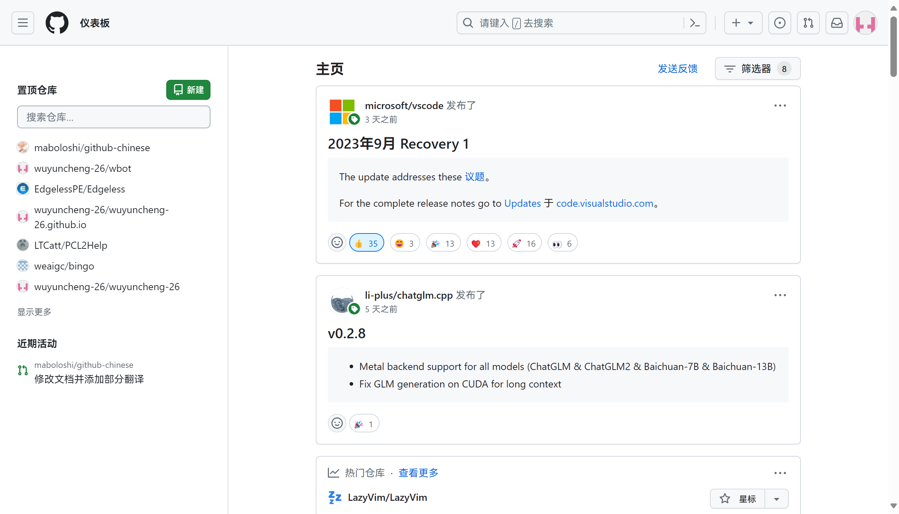
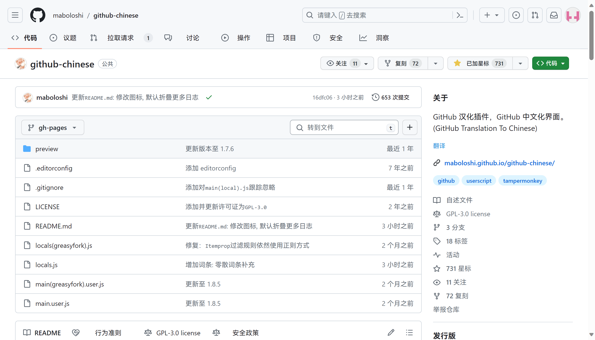

Warning
本项目从未发布至 GitCode，如您发现请截图并保留证据[!note] 🪞 这是镜像站点 本页面为 maboloshi/github-chinese 的自托管镜像，用于加速访问与备份。脚本的中文词库已改为从本站点加载，并通过 GitHub Actions 每周自动同步上游最新词库。 原作者：沙漠之子 · 许可证：GPL-3.0
目录树
TOC
🌟 功能特性
- [x] 全面中文化 GitHub 界面元素（菜单栏、标题、按钮等）
- [x] 智能正则匹配功能
- [x] 支持项目描述的人机翻译
- [x] 自动本地化时间元素
- [x] 持续更新词库
🌐 兼容环境
| 浏览器类型 | 支持的脚本管理器 |
|---|---|
| Chrome / Chromium 内核 | Tampermonkey, Violentmonkey |
| Safari（全平台） | Tampermonkey, Macaque, Stay |
| Firefox / Gecko 内核 | Tampermonkey, Violentmonkey |
| Via（Android） | 内置管理器 |
| VS Code 集成浏览器 |
💻 安装指南
浏览器（Tampermonkey）
- 安装用户脚本管理器：
- 推荐：Tampermonkey
- 基于 Chrome / Chromium 内核浏览器：
- 务必开启 “扩展程序” 管理中的 “开发者模式”1
- 务必开启 “扩展程序” 管理中脚本管理器扩展的 “允许运行用户脚本”
- 具体可参考 Tampermonkey 官方指引
- 选择安装源：
- 刷新页面后，插件即可生效
- 必要时，重启浏览器
Note
版本说明： - 🚀 开发版：实时更新，每周五自动更新词库 - 🛡️ 稳定版：每周一同步开发版词库，更稳定
VS Code 集成浏览器
请参考扩展的自述文件。
🔧 本地调试
- 安装 Tampermonkey，并启用 “允许访问文件网址”。
- 下载词库文件到本地（如：
D:\github-chinese\locals.js） - 在脚本管理器中修改引用路径： ```js // 原始路径 // @require https://raw.githubusercontent.com/...
// 修改为 // @require file:///D:/github-chinese/locals.js ``` 1. 刷新页面生效
Important
若无效： 1. 进入 Tampermonkey 插件设置页1. 将通用 - 配置模式设置为高级，进入高级设置模式 1. 找到安全 - 允许脚本访问本地文件并设置为外部(@require 和 @resource)[!TIP] 💡 温馨提示： 您可以将词库文件拖拽至浏览器地址栏，复制路径直接使用。
🔄 更新日志
最新版本
v1.9.4.4 (2026-06-20)
- 兼容修复
1.9.2.4,1.9.4.4： - 区分 React GlobalNav 与页面主体共享的 Primer 弹层，恢复下拉菜单即时、完整翻译。
v1.9.4.3 (2026-06-17)
- 兼容修复
1.9.2.3,1.9.4.3： - 收窄 React 搜索模块忽略范围，恢复仓库议题页和搜索页主体区域翻译。
v1.9.4.2 (2026-06-17)
- 兼容修复
1.9.2.2,1.9.4.2： - 在保持 React 头部搜索框稳定的前提下，恢复头部导航、菜单、搜索弹层和提示翻译。
v1.9.4.1 (2026-06-16)
- 临时修复
1.9.2,1.9.4： - 关于 GitHub 引入 React 机制导致头部搜索框消失。副作用整个头部导航全部加入忽略规则，无法翻译。
v1.9.4 (2026-05-17)
- 代码重构：
- 全面结构化重组：抽离配置常量
CONFIG、状态管理器State- 引入safe()错误边界包裹关键函数，便于排错 - 函数拆分细化：watchUpdate→setupMutationObserver+processMutations，transDesc→handleTransClick+requestRemoteTrans+showTransResult-processMutations祖先去重：同一批 mutation 中后代节点不再重复遍历 - 新增功能：
- 翻译结果 UI 暗色主题适配（CSS 变量 +
prefers-color-scheme媒体查询），使用GM_addStyle插入 - 未命中词条管理器MissedTermsManager（记录、导出 JSON、清空、统计、菜单） - 开发者模式（CONFIG.DEV）控制未命中词条菜单显隐 - Tampermonkeyonurlchange事件支持（setupUrlChangeListener） - 修复：
- 修复翻译 API 响应 XSS 漏洞：
innerHTML模板拼接改为textContent安全赋值（由 #692 报告） - 修复 TreeWalker 过滤器在ignoreSelectors为空时抛出SyntaxError- 修复翻译按钮可能重复添加的问题（nextSibling空值检查） - 修复RELATIVE-TIMEshadowRoot 为 null 时的崩溃 - 修复从未识别页面离开后State.pageConfig未清空，导致旧配置残留的问题 - 性能优化：减少无效迭代，消除不必要的 DOM 遍历
v1.9.3 (2024-08-18)
- 新增功能：通过设置中文环境，自动本地化时间元素，仅保留
on开头的时间正则，并停用时间元素监视 - 优化突变翻译处理：
- 引入
characterDataPage规则，对特定页面启用筛选字符数据的变更 - 引入ignoreMutationSelectorPage规则，忽略特定突变元素 - 合并
reIgnoreClass，reIgnoreItemprop，ignoreId，ignoreTag为ignoreSelectorPage规则，处理全局及特定页面，忽略特定元素 - 引入全局缓存模式，减少重复构建包括不限于基于
page变化的忽略规则、正则规则数组等 - 调整：更新讯飞听见翻译引擎v2.0
- 优化：梳理、优化脚本
- 调整：调整词库语言代码为
zh-CN, 与环境语言设置一致
查看更多历史版本
v1.9.2 (2024-06-14)
- 适配
www.githubstatus.com - 适配
skills.github.com
v1.9.1 (2024-05-23)
- 更新
切换正则功能按钮
v1.9.0 (2023-12-09)
- 重新定义版本号规则, 如
1.9.0-2023-12-09。 -1.9.0: 主版本号（由项目所有者更新） -2023-12-09：词库发布版本号（由 GitHub Action 自动更新） - 加强: GitHub 源【开发版】每周一凌晨自动更新
词库发布版本号 - 加强: GreasyFork 源【稳定版】每周五凌晨自动更新
词库发布版本号, 词库内容同上一次GitHub 源【开发版】 - 加强：在
README.md中自动更新贡献者头像 - 更新: 忽略规则, 词条等
v1.8.5 (2023-08-31)
- 优化:
transDesc 函数代码 - 修复: 重复添加
translate-me翻译按钮 - 加强：
watchUpdate 函数新增节点文本更新的情况 - 调整:
transBySelector和transDesc函数延迟执行时间 - 更新: 忽略规则, 词条等
v1.8.4 (2023-08-08)
- 修复:
Itemprop过滤规则, 依然使用正则方式 - 修复:
tooltipped样式提示, 依然使用正则方式
v1.8.3 (2023-08-07)
- 梳理、优化脚本
- 更新: 忽略规则, 大量词条等
v1.8.2 (2023-05-15)
greasyfork 托管源切换到按页面精细化词条模式- 调整词库格式
- 功能加强: 优化
元素筛选器翻译逻辑 - 更新: 忽略规则, 大量词条等
v1.8.1 (2023-01-22)
- 修复: #8 与 dark reader 扩展发生冲突，导致时间显示出现问题
GitHub源开始切换到按页面精细化词条模式(开发版), 词库未完全迁移适配- 停止
greasyfork源词库文件的同步更新
v1.8.0 (2023-01-18)
- 删除:
TURBO-FRAME框架处理代码. Github 已调整新动态加载模式, 直接检测url的变化就能获取对应的page信息 - 新增: 支持时间元素的
Shadow DOM翻译, 并监听变化 - 新增: 启用并更新
时间元素翻译专项正则词条 - 新增: 仅当
page有效才翻译页面 - 修复: 原
简介翻译引擎GitHub中文社区失效, 改为讯飞引擎(测试) - 修复: 追加公共正则重复迭代的问题
- 修复: 正则标记变量
RegExp与构造函数new RegExp冲突 - 更新: 忽略规则, 词条等
预告, 下次将细化page匹配规则, 导致词库文件结构大调整, 词库文件会适当变大, 页面正则更精细效率会提升
v1.7.9 (2022-07-17)
GitHub 的 ajax 载入方式逐步从 defunkt/jquery-pjax 切换到 hotwired/turbo, 导致已有的动态监测方式逐步失效
目前, 通过以下修复:
- 新增
BODY元素新增监视 - 解析
TURBO-FRAME框架, 获取对应的page - 修复 github 新动态加载模式, 导致
翻译描述返回值无法插入 - 修复 github 新动态加载模式, 导致
chrome浏览器自带翻译功能卡死页面
其他更新:
- 修复
rePagePath,rePagePathRepo,rePagePathOrg匹配规则，限制路径匹配层次，排除干扰 - 直接使用网页URL
document.URL变化触发标题翻译和JS 筛选器翻译 - 修复
关闭正则无法生效, 需要刷新页面才生效 - 日常更新词库和忽略规则
- 更新
JS 筛选器规则
v1.7.8 (2022-06-29)
- 紧急修复: GitHub 变更了
document.body和title更新机制, 导致原有的监测更新规则部分失效, 目前使用document.documentElement监视整个页面 DOM 的变更 - 跳过
<HEAD>标签 标题翻译和JS 筛选器翻译, 依据 URL变化更新
v1.7.7 (2022-06-26)
- 新增
时间元素翻译功能 - 重写
页面标题翻译函数 - 梳理
遍历节点函数逻辑 - 优化
transPage函数，默认翻译公共部分 - 调整
getPage函数, 使ClassName匹配规则优先 - 优化
translate函数, 跳过不存在英文字母和符号,., 保留首尾空白部分等 - 部分函数重命名，使用
es6新语法 - 日常更新词库和忽略规则，修复一个
JS 选择器规则
v1.7.6 (2022-05-12)
- 日常更新词库和忽略规则
- 添加手动开启/禁用正则翻译，添加切换菜单
- 优化翻译文本函数：避免已翻译词汇二次匹配，提高效率；局部翻译优先于全局
📌 待办事项
🤝 参与贡献
欢迎通过以下方式参与贡献：
- 完善词库翻译（编辑
locals.js） - 提交议题报告，参与话题讨论
- 改进代码逻辑
翻译参考资源:
🖼️ 效果预览
 
🙏 特别鸣谢
核心团队
贡献者墙
一如既往，感谢我们出色的贡献者❤️！


贡献者列表，由 GitHub Action 自动生成
📈 项目统计

🎁 欢迎打赏
赞赏列表
| 微信赞赏 | 支付宝赞赏 |
| :--------------------------------------------------------------------------------: | :--------------------------------------------------------------------------------: |
| 
☕喝点咖啡继续干☕ | 
🌶️来包辣条吧~🍪 |